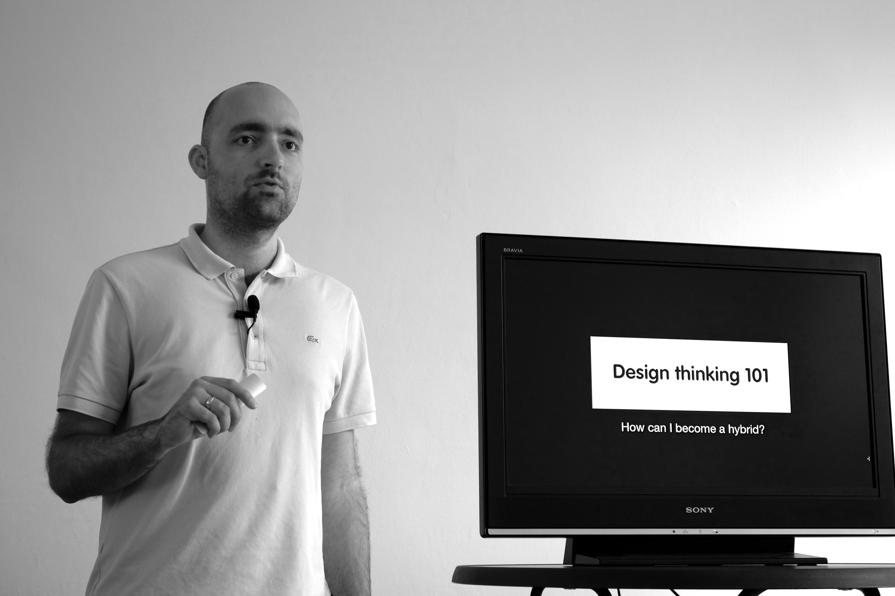

Ik praat graag over mijn werk en alles wat me verder interesseerd. Zo vind ik het leuk om te vertellen over mijn autodidactische levenswijze, het bij elkaar brengen van designers en developers en technologische vooruitgang.
Op regelmatige basis spreek ik met Wietse Hage over technologie, media en cultuur in de Appels en Peren Show.
Wil je dat ik kom spreken op een event? Neem contact op en we spreken de mogelijkheden door.
Mailen kan op hallo@reinierladan.nl en bellen op 06 2487 2725.